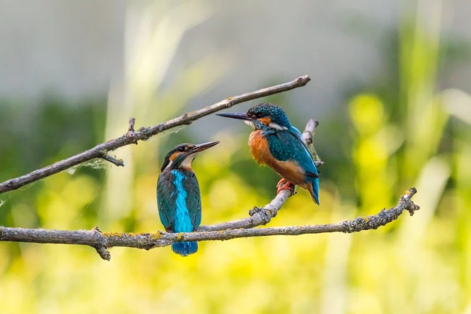

A beleza da natureza encanta a minha alma e eleva o meu coração a mais perfeita paz de espírito!
O que é Natureza?
Em seu sentido mais amplo, a natureza equivale ao mundo natural ou ao fenômeno do mundo físico que não depende da intervenção humana para nascer ou se desenvolver. Do Latim Natura, que tem por significado qualidade essencial e aquilo que nasce de uma ação, a palavra natureza também diz respeito à algo que é inerente à essência de um ser ou condição.
Ela está presente no dia a dia de muitos seres, que necessitam do seu desenvolvimento e equilíbrio para manter-se vivos. Por isso, movimentos e projetos são criados ao redor do mundo, alertando sobre as ações que causam a escassez dos recursos básicos, graves alterações climáticas e a extinção de animais.

O que compõe a Natureza?
Entre os componentes mais conhecidos encontram-se os animais, grupo que inclui os seres humanos, os fungos, as bactérias, os protistas e o reino das plantas. Diferente do que muitos pensam, a paisagem não é um componente da natureza. Para os estudiosos, ela é o resultado do nascimento e desenvolvimento dos elementos da natureza, como plantas, animais e a vida marinha.
A Natura Humana
O termo Natureza Humana é usado para expressar a verdadeira essência do homem e a sua dimensão. Esse conceito foi desenvolvido por filósofos e sociólogos como Freud e Platão desde a Grécia Antiga, através de divergentes teorias com o mesmo objetivo: entender a essência e as necessidades comuns à todos os seres humanos, como viver em coletividade, pensar ou até mesmo amar.
Mesmo não havendo um consenso sobre o seu conceito, no seu sentido geral a natureza humana significa a reunião de características diferentes que são inerentes ao seres humanos, como pensar, agir e sentir, que independem das influências exteriores como a cultura ou a educação.